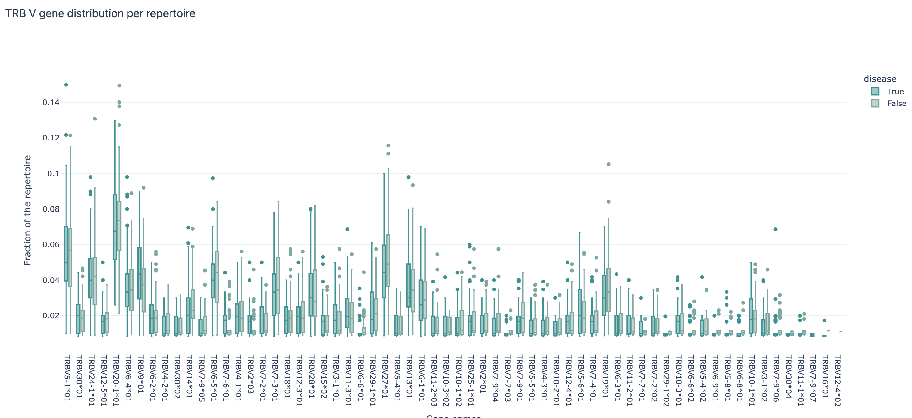

Analyzing Your Own Dataset¶
In this tutorial, we will show how to analyze your own dataset with some useful guidelines on which concrete steps to take, which instructions to use, what visualizations to create. This tutorial assumes immuneML is already installed at your machine. If that is not the case, see Installing immuneML.
The examples in this tutorial will use a simulated dataset. It consists of 200 repertoires
with two labels: disease (True, False) and batch (True, False).
The available analysis specifications should be general enough that it can be applied to any dataset with minimal changes (e.g., paths, label names).
Step 1: Explore the dataset¶
Before doing any machine learning, it is important to check the dataset. For that purpose, immuneML offers some useful reports and visualizations:
AminoAcidFrequencyDistribution: shows the relative frequency of each amino acid at each position in the sequences; the report can also split the dataset per some predefined label (e.g., by disease status)
LabelOverlap: shows the overlap of two different labels in the dataset as a heatmap; useful if in addition to the labels you are interested in, you have some other labels (e.g., batch information) that you want to check for overlap
SequenceLengthDistribution: shows the histogram of the lengths of sequences by the dataset, optionally split by a label of interest; useful to see if the dataset is balanced in terms of sequence lengths
VJGeneDistribution: shows how frequently each of the V and J gene occurs in the dataset; shows joint V and J gene distributions as well; here the report can also be split by a label of interest
LabelDist: shows the distribution for a list of labels of interest (e.g., disease, batch, age, sex); useful to see if the dataset is balanced or if some unexpected values are present
Some useful reports specifically for repertoire datasets (with one repertoire per patient):
RepertoireClonotypeSummary: shows the number of distinct clonotypes per repertoire; the clonotype counts can be colored by label of interest to see if there are any differences in the number of clonotypes per label.
Additional useful reports to be applied on encoded datasets:
FeatureComparison: splits the data by the label of interests and plots their average values per label as a scatterplot, allowing us to visually inspect which features differ the most between the label values.
DimensionalityReduction: uses a dimensionality reduction method (e.g., PCA, tSNE, UMAP) to visualize the encoded dataset and optionally colors the points (each corresponding to one example from the dataset) by label(s) of interest.
Encodings useful for exploratory analyses:
KmerFrequency encoder: represents an example by the frequency of subsequences of the given length; see the documentation for additional configuration options;
The analysis specification to run these reports:
step1_exploratory_analysis.yaml
definitions:
datasets:
dataset:
format: AIRR
params: # make sure the paths to the downloaded dataset files are correct
dataset_file: ./dataset/dataset.yaml
metadata_file: ./dataset/metadata.csv
encodings:
3mer_freq: KmerFrequency
reports:
aa_dist:
AminoAcidFrequencyDistribution:
relative_frequency: true
split_by_label: true
label: disease
alignment: IMGT
region_type: IMGT_CDR3
label_overlap:
LabelOverlap:
column_label: disease
row_label: batch
seq_len_dist_for_disease:
SequenceLengthDistribution:
sequence_type: AMINO_ACID
region_type: IMGT_CDR3
label: disease
split_by_label: true
plot_frequencies: true
seq_len_dist_for_batch:
SequenceLengthDistribution:
sequence_type: AMINO_ACID
region_type: IMGT_CDR3
label: batch
split_by_label: true
plot_frequencies: true
gene_dist_disease:
VJGeneDistribution:
split_by_label: true
label: disease
gene_dist_batch:
VJGeneDistribution:
split_by_label: true
label: batch
clonotype_summary:
RepertoireClonotypeSummary:
color_label: batch
facet_label: disease
feature_comparison:
FeatureComparison:
comparison_label: disease
column_grouping_label: batch
opacity: 0.6
show_error_bar: False
dim_red:
DimensionalityReduction:
labels: [disease, batch]
dim_red_method:
KernelPCA:
n_components: 2
kernel: rbf
instructions:
exploratory_analysis:
type: ExploratoryAnalysis
analyses:
raw_data_analysis:
dataset: dataset
reports: [aa_dist, label_overlap, seq_len_dist_for_disease, seq_len_dist_for_batch, gene_dist_disease, gene_dist_batch, clonotype_summary]
encoded_data_analysis:
dataset: dataset
encoding: 3mer_freq
reports: [feature_comparison, dim_red]
Run the exploratory analysis from the command line:
immune-ml step1_exploratory_analysis.yaml ./exploratory_analysis_results/
Some of the results on the example dataset are shown below:
Amino acid frequency distribution report per IMGT position, split by ‘disease’ label:

V gene distribution across repertoires split by the ‘disease’ label:
Comparison of feature values (average 3-mer frequencies per repertoire) across disease and batch labels:

Visualization of the dataset after 3-mer frequency encoding and dimensionality reduction with repertoires (examples) colored by the ‘disease’ label:

Step 2: Make a smaller dataset to try out the ML analysis first¶
It is often a good idea to make a smaller dataset to try out the analysis first. This can be done by using the Subsampling instruction.
step2_make_small_dataset.yaml
definitions:
datasets:
dataset:
format: AIRR
params:
dataset_file: ./dataset/dataset.yaml
metadata_file: ./dataset/metadata.csv
instructions:
subsampling:
type: Subsampling
dataset: dataset
subsampled_dataset_sizes: [75] # keep only 75 randomly selected repertoires
subsampled_repertoire_size: 50 # keep only 50 sequences per repertoire
Run this specification from the command line:
immune-ml step2_make_small_dataset.yaml ./small_dataset/
To explore the results, see ./small_dataset/index.html. The small dataset in AIRR format is then located at ./small_dataset/subsampling/dataset_75_subsampled_1/exported/airr/.
Step 3: Run the ML analysis on a smaller dataset & revise the analysis as needed¶
Here we define one example of immuneML analysis to build a repertoire classifier to distinguish between diseased and healthy. We try out different ML methods and encodings and choose the “best” one using nested cross validation. For more details on how this procedure is done in immuneML, see How to train and assess a receptor or repertoire-level ML classifier. For a detailed list of data encodings and ML methods, see YAML specification.
Note
The results we obtain here are not so interesting per se, as we run the analysis on a subset of data. The aim is to make sure the analysis runs without issues and that all the parameters of interest (e.g., all visualizations and ML-encoding combinations) have been provided.
Here is an example of the specification:
step3_small_ML_analysis.yaml
definitions:
datasets:
dataset:
format: AIRR
params:
dataset_file: ./small_dataset/subsampling/dataset_75_subsampled_1/exported/airr/dataset.yaml
metadata_file: ./small_dataset/subsampling/dataset_75_subsampled_1/exported/airr/metadata.csv
encodings:
3mer_freq: KmerFrequency
esmc: ESMC
ml_methods:
log_reg_l1:
LogisticRegression:
penalty: l1
log_reg_l2:
LogisticRegression:
penalty: l2
random_forest:
RandomForestClassifier:
n_estimators: 50
reports:
coefficients: # examine the coefficients of individual models (eg betas of logistic regression)
Coefficients:
coeff_to_plot: [n_largest]
n_largest: [20]
ml_setting_comparison: MLSettingsPerformance # plot performance of different ML settings
performance_per_label: # performance of the model where examples are grouped by alternative label
PerformancePerLabel: # it can be used to see if the model is learning alternative label instead of label of interest
alternative_label: batch
metric: balanced_accuracy
roc_curve_summary: ROCCurveSummary
instructions:
fit_and_eval_classifiers:
type: TrainMLModel
settings:
- encoding: 3mer_freq
ml_method: log_reg_l1
- encoding: 3mer_freq
ml_method: log_reg_l2
- encoding: 3mer_freq
ml_method: random_forest
- encoding: esmc
ml_method: log_reg_l1
- encoding: esmc
ml_method: log_reg_l2
- encoding: esmc
ml_method: random_forest
assessment: # outer loop of the nested cross validation (for model assessment)
split_strategy: random # randomly split to train+validation and test
split_count: 1
training_percentage: 0.7
reports:
models: [coefficients] # plot coefficients of models trained on the train+validation data
selection: # inner loop of the nested cross validation (for model selection)
split_strategy: k_fold # do 5-fold CV starting from train+validation data [70% of the original dataset as defined in assessment]
split_count: 5
labels: [disease]
dataset: dataset
metrics: [auc, precision, recall]
optimization_metric: balanced_accuracy
reports: [ml_setting_comparison, performance_per_label, roc_curve_summary]
Run this specification from the command line:
immune-ml step3_small_ML_analysis.yaml ./small_ML_result/
To explore the results, see ./small_ML_result/index.html. In case something went wrong, all details can be found at ./small_ML_result/log.txt.
Step 4: Run the analysis on the full dataset¶
If everything worked out well so far (or if all necessary adjustments have been made), run the analysis on the full dataset. The specification file is the same as in step 3, except that dataset file and metadata file should point to the full dataset instead.
Here are some of the results on the full dataset:
ROC curves with AUC annotated for all combinations of encoding + ML method listed on the test set:
As the disease-associated signal is a 3-mer (by the simulation setup), the best performing method is a logistic regression with L1 penalty and with data encoded by 3-mer frequencies.
Since there is also batch information in the dataset, it is possible to check if the performance of the models differs for different batches (the results shown here are for the test set):
Additional information¶
The simulated dataset used in this tutorial was created using LIgO tool from immuneML. It uses OLGA to generate naive immune receptor sequences and simulates immune events by either implanting or filtering sequences based on user-specified conditions. For more information on LIgO and simulations, see Dataset simulation with LIgO.